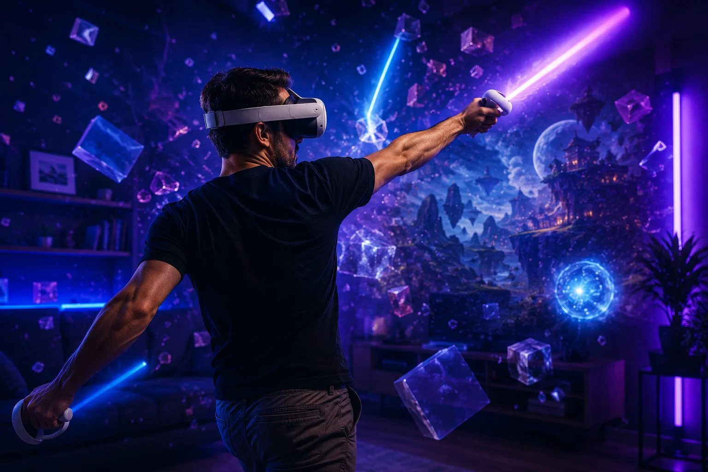

Los mejores juegos de VR (2026)

Esta lista es una selección curada —e inevitablemente subjetiva— de algunos de los juegos de realidad virtual más destacados y relevantes en 2026. Consideramos la calidad general, la innovación, la vigencia y la disponibilidad en las principales plataformas (Quest 3/3S, PSVR2, PCVR/Steam, Pico). Los precios son orientativos y varían según plataforma, edición y región.
Half-Life: Alyx
9.6/10El juego que demostró de qué es capaz la VR de verdad.
Half-Life: Alyx sigue siendo la vara — el juego que la gente señala para explicar por qué la VR importa. Valve construyó un Half-Life completo y de gran presupuesto alrededor de las fortalezas del medio: manipular objetos, resolver puzles físicos, asomarse tras las coberturas. Si tenés la PC para moverlo, es el primero que hay que jugar y con el que se mide todo lo demás.
Ideal para: Cualquiera con una PC capaz que quiera ver lo mejor que la VR puede ofrecer.
Acción, aventura, FPS
Dónde jugarlo: Steam →
Microsoft Flight Simulator 2024 (PSVR2)
9.5/10Volá por los cielos del mundo con un realismo abrumador en PSVR2.
Más que un "juego de VR" al uso, MSFS 2024 en PSVR2 es un simulador gigantesco que incluye un modo VR completo. La escala del mundo, la cabina alrededor tuyo, el sonido y la sensación de estar realmente ahí lo vuelven casi contemplativo… salvo cuando todo sale mal. Es exigente a nivel de hardware y de estómago: recomendable para gente que ya se siente cómoda en VR y disfruta más del proceso de volar que de "pasar niveles".
Ideal para: Entusiastas de la aviación que buscan realismo gráfico y simulación profunda.
Simulación, vuelo
Dónde jugarlo: PlayStation Store →
Beat Saber
9.3/10El juego de ritmo que se volvió la carta de presentación de la VR.
Beat Saber es el juego más fácil de entender del mundo y uno de los más difíciles de soltar: cortás bloques al ritmo de la música con dos sables de luz. Es la primera experiencia de VR perfecta, un ejercicio disfrazado de juego y rejugable hasta el infinito gracias a las canciones custom y los packs de música. Casi nadie le dice que no.
Ideal para: Principiantes, amantes de la música, cualquiera que quiera el juego perfecto para mostrarle VR a un amigo.
Ritmo, música
Dónde jugarlo: Steam →Meta Quest Store →
Batman: Arkham Shadow
9.2/10Convertite en el Caballero Oscuro y defendé Gotham en esta épica aventura de VR.
Batman: Arkham Shadow ofrece una inmersión muy lograda en el universo de Batman, con un sistema de combate que se adapta bien al cuerpo y secciones de sigilo que te hacen sentir un verdadero vigilante encapuchado. Es imprescindible para quienes crecieron con los Arkham originales y quieren sentir el peso del traje y la capa en primera persona. No es el más cómodo para sesiones larguísimas, pero como experiencia de superhéroes en VR está en la primera línea.
Ideal para: Fans de Batman, amantes de la acción y la aventura, jugadores que buscan una experiencia inmersiva de superhéroes.
Acción, aventura, superhéroes
Dónde jugarlo: Meta Quest Store →
Aces of Thunder
9/10Pilotá aviones de combate históricos en intensas batallas aéreas VR.
Aces of Thunder se sitúa más cerca de la simulación "seria" que del arcade: no es tanto un juego de "mirar marcadores" como de sentir el aparato alrededor tuyo. Es un gran ejemplo de cómo la VR puede transformar la relación con la velocidad, el vértigo y la distancia en un dogfight. Si tu fantasía es mirar por la cabina y ver el sol filtrado entre las alas mientras te persigue alguien, este es tu lugar.
Ideal para: Entusiastas de la simulación de vuelo, fans de los combates aéreos históricos, jugadores que disfrutan de juegos duros de aprender pero muy gratificantes.
Simulación, combate aéreo, guerra
Dónde jugarlo: PlayStation Store →Steam →
Walkabout Mini Golf
9/10El juego social más querido (y silencioso) de la VR.
Walkabout Mini Golf suena modesto y resulta ser una de las mejores experiencias multijugador de la VR. Las canchas son hermosas e imaginativas, las físicas son perfectas, y recorrer un hoyo charlando con amigos de cualquier parte del mundo es alegría pura y sin estrés. Es cómodo para absolutamente cualquiera, y el "ahora entiendo la VR" más barato que podés comprar.
Ideal para: Parejas, familias, amigos a distancia — cualquiera que quiera VR relajada y social.
Casual, deportes, social
Dónde jugarlo: Steam →
Pistol Whip
9/10John Wick se cruza con un juego de ritmo — y la rompe.
Pistol Whip fusiona un shooter sobre raíles con un juego de ritmo y una dosis pesada de onda de película de acción. Te agachás, esquivás y disparás al compás, y en una buena run te sentís la persona más estilosa del planeta. Es accesible, rejugable hasta el cansancio y uno de los mejores "una partida más" en cualquier visor.
Ideal para: Quienes quieren acción y música juntas; fans del estilo tipo John Wick.
Ritmo, shooter
Dónde jugarlo: Steam →
Roboquest VR
8.9/10Un FPS roguelite frenético y fluido, reconstruido para la realidad virtual.
Roboquest VR toma la base del original —shooting ágil, builds locas, estética colorida— y la lleva a un plano donde literalmente tenés que apuntar y recargar. Es adrenalina y ritmo, con runs que invitan al min-max de builds y armas. Perfecto si extrañás esa sensación de "arena shooter" pero querés que el cuerpo también juegue.
Ideal para: Fans de los FPS rápidos, amantes de los roguelites, gente que disfruta del flow de moverse y disparar sin parar.
FPS, roguelite, acción, cooperativo
Dónde jugarlo: Meta Quest Store →Steam →
Little Nightmares VR: Altered Echoes
8.8/10Sumergite en un mundo inquietante y resolvé puzles en esta oscura aventura de VR.
Little Nightmares VR: Altered Echoes traslada la estética enfermiza de la saga a un punto de vista que da vértigo: todo se vuelve enorme, pesado, casi táctil. Es ideal si te interesan los relatos de terror que no dependen del jumpscare continuo, sino de una sensación difusa de amenaza. El control se siente más pausado que en otros juegos de VR, lo que ayuda a que sea relativamente cómodo incluso para gente no habituada.
Ideal para: Amantes de los puzles, fans del terror atmosférico, jugadores que buscan una experiencia narrativa compacta y distinta.
Aventura, puzles, terror, plataformas
Dónde jugarlo: Steam →Meta Quest Store →
Gorilla Tag
8.8/10El juego de la mancha, gratis y a pura fuerza de brazos, que se volvió un fenómeno.
Gorilla Tag no tiene sticks ni botones para moverse: corrés y trepás moviendo los brazos, y de algún modo eso se convirtió en uno de los fenómenos sociales más grandes de la VR. Es gratis, absurdamente divertido con el lobby lleno y un ejercicio de verdad. La locomoción puede ser intensa para el estómago y los hombros de los novatos, pero pocos juegos capturan la magia social de la VR como este.
Ideal para: Jugadores sociales, público joven, cualquiera que quiera una forma gratis y divertidísima de moverse.
Social, multijugador, acción
Dónde jugarlo: Steam →Meta Quest Store →
One More Delve
8.7/10Explorá mazmorras generadas proceduralmente con amigos en este roguelite cooperativo.
One More Delve es de esos indies que entienden bien qué hace divertido a un dungeon crawler: loops cortos, loot que se siente significativo y físicas que dan peso a cada golpe. El cooperativo le suma una capa social que combina bien con el riesgo permanente del permadeath. Si te gustan las espadas, los dungeons y hablar de builds mientras esquivás hachazos, es candidato fijo para tu biblioteca.
Ideal para: Amantes de los roguelites, fans de los dungeon crawlers clásicos, grupos pequeños que gozan del "una run más y me voy".
Roguelite, dungeon crawler, cooperativo, RPG
Dónde jugarlo: Steam →Meta Quest Store →
Superhot VR
8.7/10El tiempo avanza solo cuando te movés — el truco perfecto para VR.
El truco de Superhot VR —el tiempo solo avanza cuando te movés vos— parece hecho para la realidad virtual. Te convertís en un héroe de acción en cámara lenta, esquivando balas y arrebatando armas del aire en una coreografía que inventás sobre la marcha. Es corto y con mucho estilo, y pocos juegos te hacen sentir tan canchero como este.
Ideal para: Quienes aman una idea ingeniosa; cualquiera que quiera sentirse un héroe de acción.
Acción, puzle, shooter
Dónde jugarlo: Steam →
Beat the Beats
8.6/10Boxeá al ritmo de la música en este enérgico juego de fitness VR.
Beat the Beats se apoya en movimientos de boxeo "reales" (jab, hook, uppercut, rolls) pero encapsulados en un lenguaje de juego de ritmo. Es menos abstracto que golpear bloques y más cercano a una clase de boxercise, con pistas y remixes que invitan a repetir sesiones. Una muy buena puerta de entrada para transformar la VR en rutina física cotidiana sin perder el lado lúdico.
Ideal para: Amantes de los juegos de ritmo, entusiastas del fitness, gente que quiere sudar sin darse cuenta de que está haciendo ejercicio.
Ritmo, fitness, música, boxeo
Dónde jugarlo: Meta Quest Store →
TMNT: Empire City
8.5/10Unite a las Tortugas Ninja en un beat 'em up cooperativo lleno de acción VR.
TMNT: Empire City es una carta de amor a los dibujos de sábado a la mañana, pero pasados por el filtro de la VR. Pegar, bloquear y moverte por la ciudad tiene una fisicidad que engancha enseguida, y en co-op la cosa se vuelve carnavalesca. No pretende ser un "Deep RPG": es un juego para entrar, revolear ninchaku, reírse y salir con agujetas en los hombros.
Ideal para: Fans de las Tortugas Ninja, grupos de amigos que buscan co-op directo y físico, jugadores que quieren repartir tortas más que microgestionar builds.
Acción, beat 'em up, cooperativo
Dónde jugarlo: Meta Quest Store →Steam →
Wrath VR: Aeon of Ruin – Brutal Edition
8.5/10Un FPS retro brutal que te transporta a la era dorada de los shooters.
Wrath VR: Aeon of Ruin – Brutal Edition es una lectura muy física de aquella época de Quake y compañía: armas exageradas, movilidad acelerada, sangre a mares. La adaptación a VR le suma recarga física, dual wielding y un tipo de movimiento que exige estar atento al cuerpo y al espacio real. Si creciste con los FPS de los 90, esto funciona casi como un sueño febril jugable.
Ideal para: Fans de los FPS clásicos, amantes de los "boomer shooters", jugadores que quieren moverse rápido y disparar más rápido aún.
FPS, retro, boomer shooter, acción
Dónde jugarlo: Steam →Meta Quest Store →
Bootstrap Island
8.3/10Luchá por sobrevivir en una isla misteriosa llena de peligros y secretos.
Bootstrap Island es, en cierto sentido, un simulador de naufragio interior: te deja solo, te suelta en una isla hostil y te obliga a aprender a base de morir. La VR potencia la sensación de precariedad: encender un fuego, cazar o simplemente encontrar refugio se sienten como pequeñas victorias. Es exigente, sí, pero también un gran ejemplo de cómo el cuerpo y la memoria se entrelazan cuando el mundo se vuelve táctil.
Ideal para: Fans de los juegos de supervivencia realista, quienes disfrutan de probar sistemas una y otra vez hasta domarlos.
Nota: Se puede jugar en Quest vía PC Link/Air Link; todavía no hay versión standalone para Quest.
Supervivencia, aventura, mundo abierto
Dónde jugarlo: Steam →
The Boys: Trigger Warning
8.2/10Desatá el caos en el universo de The Boys con esta explosiva aventura VR.
The Boys: Trigger Warning entiende que su universo no funciona si se "limpia": hay sangre, cinismo y un humor negrísimo, y todo eso está presente también en VR. La historia te pone del lado de los "poco santos" y te hace habitar un cuerpo con poderes en un mundo que ya no cree en la inocencia. Si la serie te resultó incómoda, este juego probablemente más.
Ideal para: Fans de The Boys, jugadores que buscan una narrativa de superhéroes cínica y sangrienta, amantes del FPS con personalidad.
Acción, superhéroes, FPS
Dónde jugarlo: Meta Quest Store →
FlatOut 4: Total Insanity VR
8.1/10Carreras explosivas y destrucción total en este remake VR de FlatOut.
FlatOut 4: Total Insanity VR toma la fantasía infantil de chocar autos "a propósito" y la coloca directamente frente a tus ojos. El resultado es caótico, ruidoso y, cuando todo encaja, tremendamente catártico. No es un juego que apueste por la contención: viene a recordarte que la VR también puede ser pura exageración arcade.
Ideal para: Fans de las carreras arcade, amantes de la destrucción vehicular, jugadores que quieren "ver de cerca" los choques.
Carreras, destrucción, acción
Dónde jugarlo: Steam →
Squingle Arcade
8/10Un puzle cósmico gratuito que te sumerge en un flujo meditativo.
Squingle Arcade es casi una instalación artística jugable: luces, formas y música se combinan en un loop de concentración suave. Ideal para enseñar VR sin abrumar ni marear, y para tener siempre algo a mano que no requiera "modo gamer". Es de esos títulos que se agradecen después de una sesión intensa en otros mundos.
Ideal para: Jugadores casuales, amantes de los puzles espaciales, gente que busca algo más meditativo que competitivo.
Puzles, casual, relajación
Dónde jugarlo: Meta Quest Store →
VMX
7.9/10Sentí la adrenalina de los deportes extremos en VR con BMX, scooter y mountain bike.
VMX es algo así como un parque de bicis y scooters metido en tu visor: gestos, giros y trucos se traducen en movimientos físicos que requieren coordinación. En Early Access ya ofrece mapas y modos suficientes para perderse un buen rato, aunque aún se nota que está en construcción. Si te interesan los deportes extremos y la posibilidad de "sentir" un tailwhip sin romperte nada, merece tu atención.
Ideal para: Amantes de los deportes extremos, fans de las carreras, gente que disfruta del ensayo y error en un skatepark virtual.
Deportes, carreras, simulación
Dónde jugarlo: Steam →
Star Trek: Infection
7.8/10Una misión de Starfleet se convierte en una pesadilla de supervivencia en VR.
Star Trek: Infection toma la iconografía clásica de la franquicia —pasillos estrechos, tricorders, puertas que se abren con un susurro— y la tiñe de horror corporal. Es menos un festival de disparos y más un paseo incómodo por los límites del canon. Para fans de Star Trek puede ser una especie de "what if" jugable, donde el universo conocido se ve atravesado por algo oscuro y viscoso.
Ideal para: Trekkies, fans del terror narrativo, jugadores que prefieren la exploración tensa antes que la acción constante.
Terror, supervivencia, narrativa
Dónde jugarlo: Meta Quest Store →Steam →
En el radar (próximamente)
Supervivencia cooperativa: de día explorás y juntás recursos, de noche defendés el faro de criaturas marinas. Para sumar a la wishlist.
Hacé el test de 60 segundos y obtené tu recomendación personalizada.
Hacer el test →Los precios son orientativos y pueden variar con ofertas, bundles y diferencias regionales. Las notas y la valoración de "comodidad" son estimaciones editoriales, no métricas oficiales de los estudios. La disponibilidad puede cambiar: conviene chequear la ficha de la tienda antes de comprar.